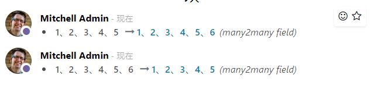

<div class="container">

    <div class="oe_styling_v8">
        <div class="shadow row my-5 p-3 pb-2 overflow-hidden">
            <div class="container">
                <div class="row">
                    <p style="width: 100%; font-size: 18px; text-indent:1em;" class="px-sm-4 p-2">
                        Tracking many2many field changed in form view.
                        many2many value changes will be record like this:
                    </p>
                </div>
            </div>
        </div>

        <div class="shadow row my-5 p-3 pb-2 overflow-hidden">
            
        </div>
    </div>
</div>